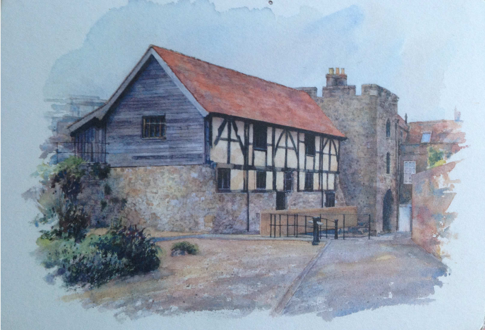
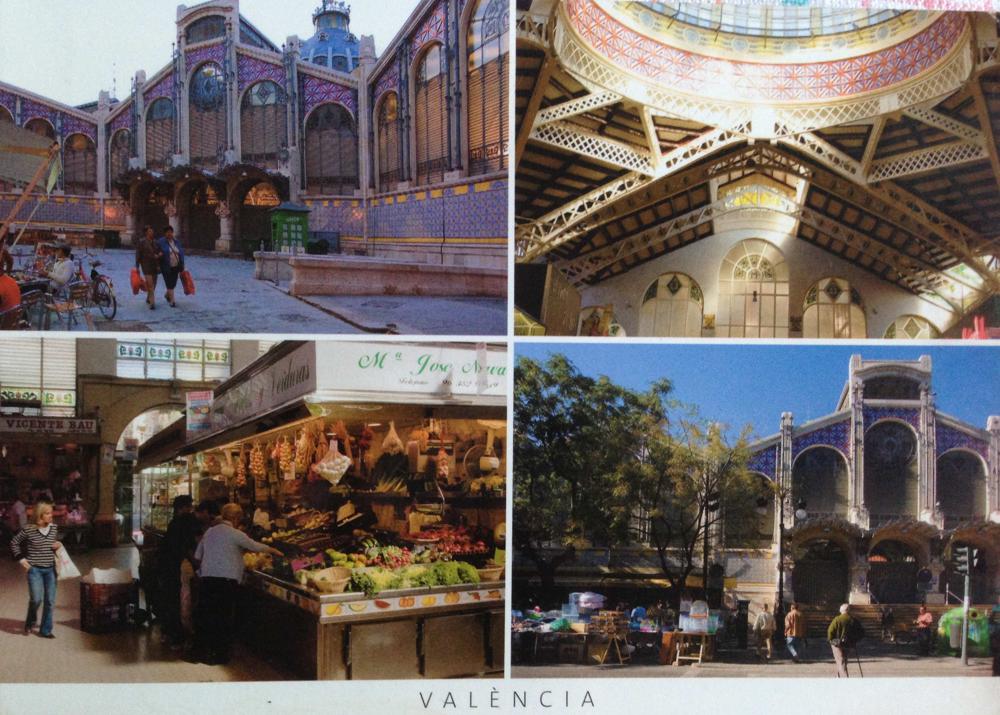
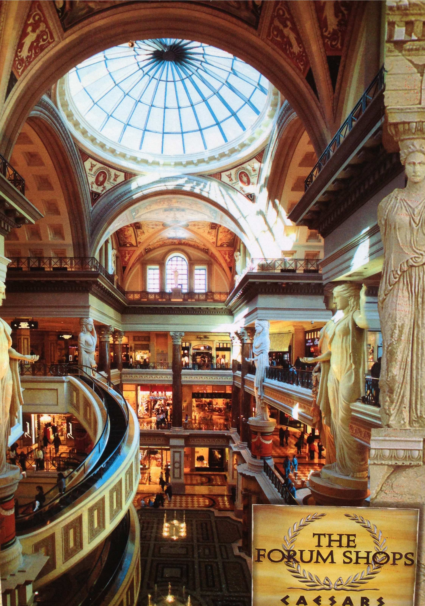
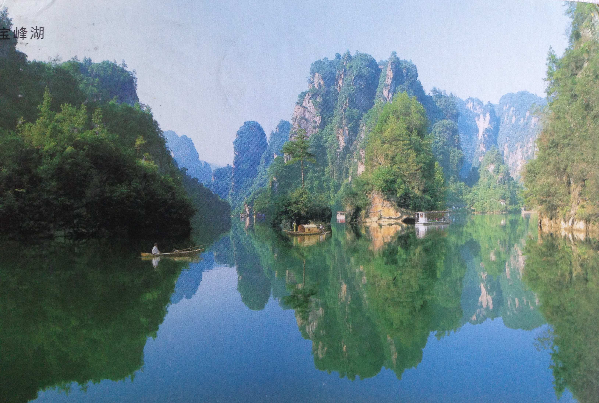
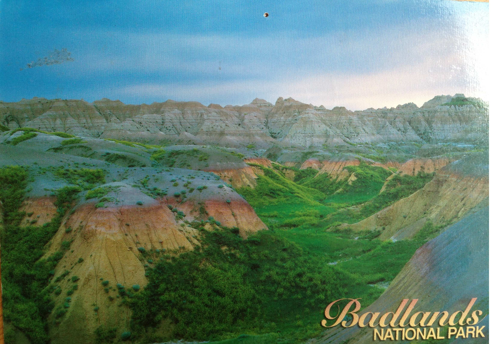
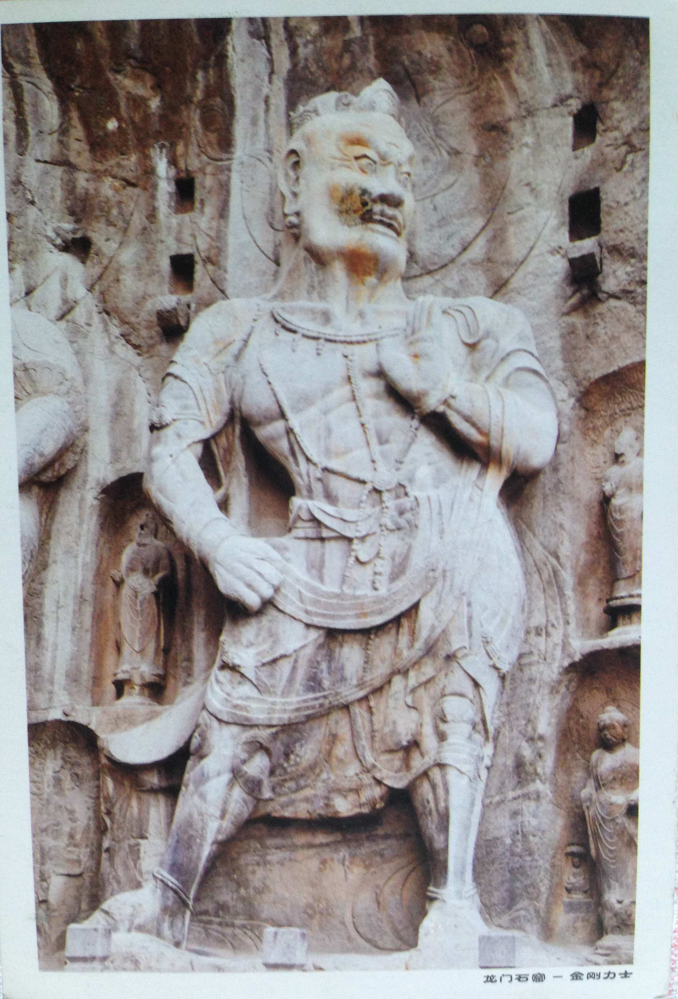
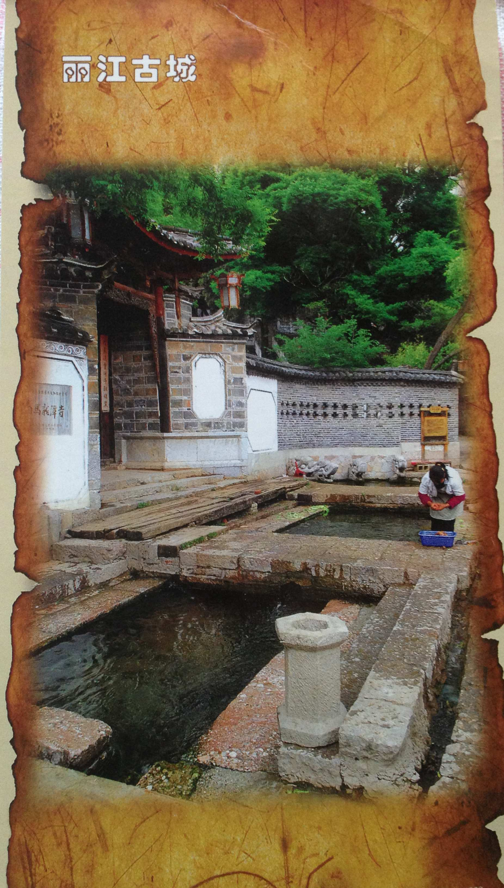
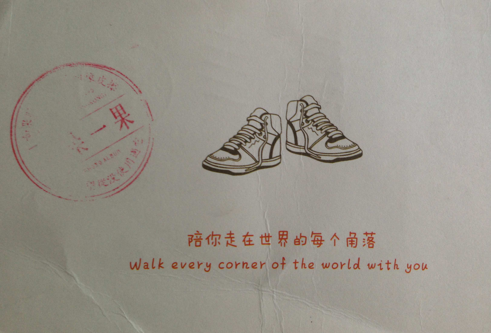
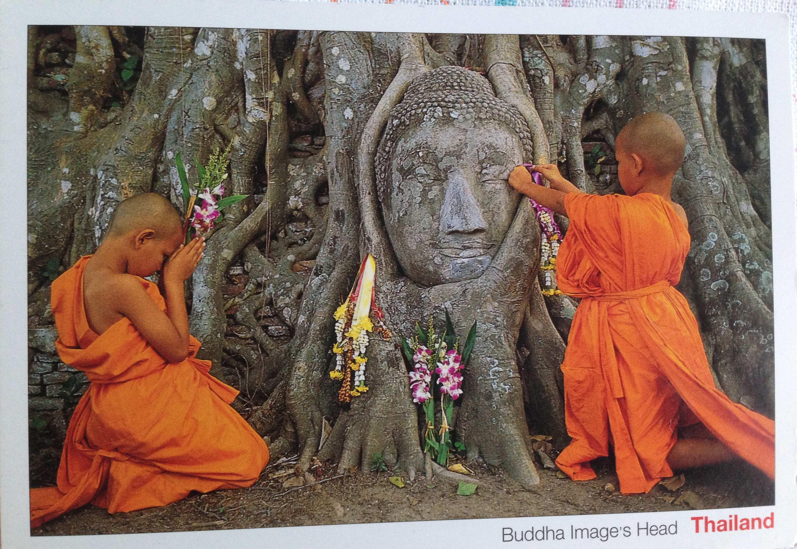
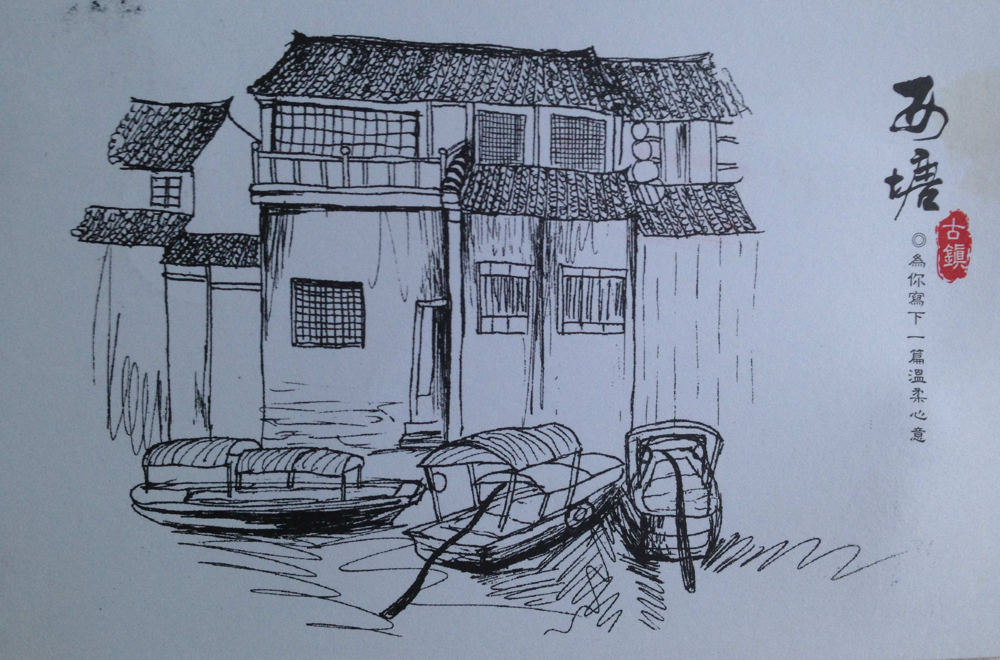

人物篇
Andy
2011-10-24 Southsampton,England
从Andy那里收到的第一张明信片，还是从Ivy那里拿过来的。
「You smiled and talked to me of nothing, and I felt that this I had been waiting long」

2012-03-29 西班牙瓦伦西亚
Andy因为要去看巴萨的比赛，去了西班牙玩，所以从西班牙收到了很多明信片。这是第一张。
「好久没写字，手都发抖了。…邮递员老师，您一定在笑。」

2012-04-12 巴特略之家(Casa Batlló) By Guadi
虽然我对足球没有什么热爱，但是还是非常想去西班牙看高迪的作品
2012-04-13 Park Güell的屋顶
滟
2010-12-28
yan去西班牙玩的时候寄来的这张巴特略之家，是我第一次知道Guadi这个建筑家。后来在网上看过很多他的其他的建筑，但是心里好像对巴特略更加偏爱。
2011-03
yan去加州交流，这时我正在温哥华。因为她没标日期，所以已经不知道这张卡是什么时候寄的了。但是她问我还有一个月就要回国是不是舍不得，所以应该是3月份，刚刚在人人上查时间的时候，觉得真是感慨万千。
「还记得你去加拿大之前，我们在东吴面馆吃的面，回去后又可以吃了哦，国外的日子是很酷，但有时也是苦中作乐，会是一种体验吧。希望你能带着美好的回忆，Enjoy your life.」

Ivy
2012-04-27 敦煌莫高窟
本来说老滕她们一起去敦煌的，但是毕业前时间凑不好，就错过了。
－「下次还想和你一起旅游，玩的」
－Me too
阙子
2012-04-27 张家界 高峡出平湖
阙子的毕业旅行，后来八月份我也去了张家界但是却没有看到这张明信片上的景色。

Xinyu
2010-08-19 Badlands National Park
大二的暑假之前，陈回国来杭州玩了两天。他来学校陪我考了体育的理论上机考试，去了西湖，还一起逛了吴山花鸟市场。回国之后，他在黄石公园旅游的时候给我寄的卡。

Ivy
2010-11-29 鼓浪屿
鸽子和她爸爸妈妈去了厦门，从鼓浪屿寄来的明信片。

小鱼
2012-06-28 湖南凤凰
和Andy，小鱼，面和章栩一起去了张家界和凤凰，小鱼在凤凰给我写了明信片。
2012-08-26 湖南洛阳龙门石窟
6月份的时候，我和宗胜，宇琛还有阿迪在毕业论文审核的节骨眼上去了一趟洛阳，结果非常开心，而且大家的论文也顺利通过了。小鱼那时候没能和我们一起去，在八月份的时候也去了一次。
「总结一下，和你们当时回来一样，不虚此行也。」

宗胜
2011-08-26 罗马斗兽场－荷兰梵高博物馆
宗胜去爱尔兰梅努斯国立大学做交换生，在圣诞节的假期他们一行人去欧洲转了一大圈，我很贪心地说每个国家的明信片都想要。
虽然还没能自己去走一趟，但是朋友心里惦记着你，替你看了这些风景，走过了这些路，最后化成了这张小小的卡片，就是最好的礼物。大概就是「明信片旅游」的意义。

2012-05-09 丽江
那一阵子，lv去了好多好多地方，所以收到了很多卡片。

2012-06-26 厦门
毕业旅行的时候，男生们想去看海，女生们想去看山，最后就分开了。据说大家在海边租了一个别墅吃海鲜大餐。
「如果时光是记忆的橡皮擦，我希望从来没有使用过它。」

2012-08-26 成都
宗胜和小鱼一起去了四川，那时候我已经在准备去日本了，他在明信片上说要常聚聚，但是从此之后我俩就再也没见过面。
大学篇
CMU
2012-05-21 From Tianle
Tianle在这里的VLIS读研究生。我一直很向往那里，虽然没能去到，收到一张明信片已经很开心了

武汉大学
2012-04-15 From 杨曦
杨曦在这张明信片里说，武汉大学的樱花已经开了又谢了。怀念2011年的暑假在孙家村一起赖床的日子。
浙江大学
2009-12-28 From 姜士奇
姜士奇同学在人人上发状态问谁要新年明信片，就说要了。其实只是从碧峰宿舍4幢寄到5幢而已，但是明信片上的启真湖和行政楼在过了4年之后就成了一个我的念想。
上海交通大学
2012-02-04 From 李峰乾
李峰乾童鞋去交通大学读研究生了，生日收到的明信片。

北京大学
2012-02-04 From 王凯
认识王凯是在高三的时候的HSLYC夏令营，那时候他已经保送北京大学的生物专业了，等到一年后再见到面的时候，他已经转去光华学院了。我俩之后零零碎碎地在北京杭州见过两次面，眼看着这个牛人走在越来越牛的道路上。

Around The World篇
马来西亚
2012-09-10 From Xie
Xie的公司让他们去马来西亚参加全球的新人培训，于是有了这张卡片。那时候我在上海郊区上日语课，还记得总在早上上课前去看明信片有没有到。
泰国之一
2012-01-02 From K.L
「是一个朋友托我给你寄一张明信片，希望能给寒冬中的你带来一份东南亚的温暖」

泰国之二
2012-06-19 From 方兴
记得是我在QQ上向方同学讨的明信片。

行路中国篇
上海西塘
2012-04-21 From Xie
西塘我也是去过的，Xie去之前还给他推荐了那家非常喜欢的餐馆，叫老品芳。背面的留言是日语，那时候还刚开始学日语，都不懂写了什么意思。

南京长江大桥
2012-07-06 From 小白
小白去南京旅游，收到的卡片。好久没联系，她也不知道我去了日本，在卡片里面问我去了什么学校。
没有主题篇
二十四节气中的立春
2012-01-07 From 雅楠姐
雅楠姐是最初面试我的人，后来决定去日本工作之后，她就成了我的担当。新年的时候收到她的卡片，明信片正面的节气正好是我的生日。后来我又在淘宝上买了整整一套这样的二十四节气的明信片，但是却都没有这张纸质这么好。